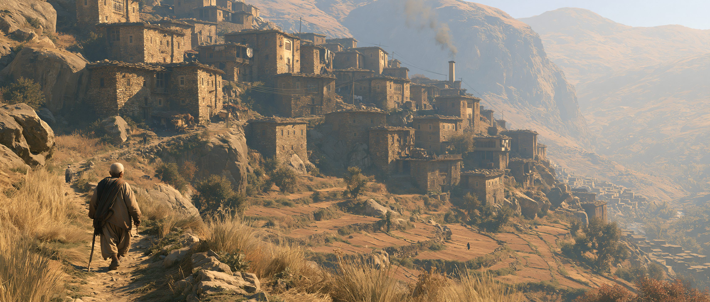
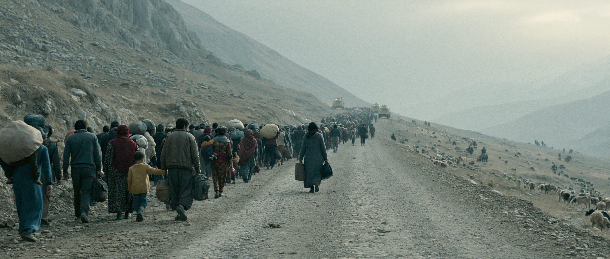
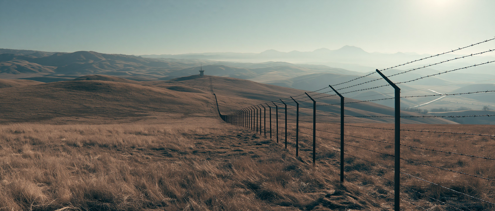
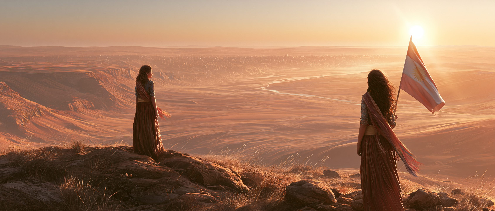

01 論点 — 地図に色を持たない民
「クルド人に友はなく、あるのは山だけ」 ——彼らのあいだで、幾世代にもわたって語り継がれてきた言葉だ。裏切られ、見捨てられ、そのたびに山へ退いて生き延びてきた民族の記憶が、この短い一句に凝縮されている。
クルド人は、トルコ・シリア・イラク・イランの国境が交わる山岳地帯——通称「クルディスタン」——に暮らす民族だ。人口は推定約4000万人 。アラブ、トルコ、ペルシャに次ぐ中東で4番目に大きい民族 であり、独自の言語（クルド語）と文化を持つ。にもかかわらず、彼らは自分たちの国家を持たない世界最大級の民族 ——「国のない最大の民（the largest stateless nation）」と呼ばれる。
独自の言葉を持ち、独自の文化を持ち、4000万という人口を抱えながら、クルド人はなぜ独立国家を持てないのか。そして2025年、PKKが解散と武装解除を決定し、長年の武装闘争が大きな転換点を迎えたいま、その問いはどこへ向かうのか。
The core of the question
何が「問題」なのか
4000万人が、一つの民族としてまとまった国土を持てず、4つの主権国家の中に少数民族として分散している。どの国でも「その国の一部」とされ、独立や自治を求めれば弾圧の対象になってきた。
なぜ分断されたのか
1920年のセーヴル条約は、クルド人多数地域の自治と、一定の条件下での独立の可能性を示した。しかし条約は発効せず、1923年のローザンヌ条約ではその規定が削除された。旧オスマン帝国側の居住地域は戦後の国境形成で主にトルコ・イラク・シリアに分かれ、以前からイラン領だった地域と合わせて、クルド人は4カ国にまたがって暮らすことになった。
なぜ、いま問うのか
2025年、40年続いたクルド労働者党（PKK）が解散と武装解除を決定し、武装闘争は終結に向けた過程に入った。シリアではクルド主導勢力が新政権への統合に動いており、銃による闘争から政治的解決へ移行できるかが問われている。
Key terms
クルディスタン
「クルド人の地」を意味する地理的呼称。トルコ南東部・シリア北部・イラク北部・イラン北西部にまたがる山岳地帯を指し、独立した国家ではない。
PKK（クルド労働者党）
1978年結成、1984年からトルコ国家と武装闘争を続けたクルド組織。トルコと欧米はテロ組織に指定。2025年5月に解散・武装解除を宣言した。
SDF（シリア民主軍）
シリア北東部のクルド主導の軍事組織。対「イスラム国（ISIS）」戦でアメリカと連携し主力を担った。2025年以降、シリア新政権への統合が進む。
KRG（クルディスタン地域政府）
イラク北部の自治政府。2005年のイラク新憲法で正式に承認された、クルド人が唯一の公式な自治を得ている地域。独自の議会・治安部隊を持つ。
ペシュメルガ
「死に立ち向かう者」を意味する、イラク・クルド自治区の治安部隊。対ISIS戦で存在感を示した。
オジャラン
PKKの創設者アブドラ・オジャラン。1999年からトルコで終身刑に服す。解散後も和平プロセスの鍵を握り、クルド側は釈放を求めている。

山肌に張りつくように築かれたクルドの高地の村。国家を持たずとも、彼らは山とともに独自の言葉と文化を千年以上守ってきた。※イメージ画像（生成AI）
02 タイムライン — 分断の形成から、武装闘争の転換点まで
1920年
セーヴル条約 — クルド人自治と条件付き独立への言及
第一次大戦で敗れたオスマン帝国を解体する講和条約が、クルド人多数地域の自治と、一定の条件を満たした場合に独立へ進む可能性を規定した。だが条約は批准・発効されず、実際には実施されなかった。
自治と条件付き独立に言及
条約は発効せず
1923年
ローザンヌ条約 — クルド自治の規定が消滅
トルコ共和国の建国とともに、セーヴル条約はローザンヌ条約に置き換えられた。新条約からはクルド人の自治・独立に関する規定が削除された。旧オスマン帝国側のクルド人居住地域は、その後の国境形成を通じて主にトルコ・イラク・シリアへと分かれていく。
クルド自治の規定が消滅
戦後の国境形成で分断が固定化
1946年
マハバード共和国 — 11か月で消えた「幻の国家」
イラン北西部に、ソ連の支援を背景としてクルド人の共和国が樹立された。近代クルド民族運動を象徴する代表的な国家建設の試みだったが、ソ連軍が撤退すると後ろ盾を失い、わずか11か月で崩壊。指導者カジ・ムハンマドは処刑された。大国に利用され、用が済めば見捨てられる——後に何度も繰り返される構図の一例となった。
近代クルド史を象徴する共和国
ソ連撤退後に後ろ盾を失う
1984年
PKKの武装闘争開始 — 40年の紛争へ
アブドラ・オジャラン率いるPKKが、トルコ国家に対する武装闘争を開始した。以後、この紛争はおよそ4万人の命を奪い、トルコ社会の最も深い亀裂となっていく。
死者 約4万人
トルコの最大の内政課題に
1988年
ハラブジャ事件 — 化学兵器による虐殺
イラン・イラク戦争末期、サダム・フセイン政権がイラク北部のクルド人の町ハラブジャに化学兵器を使用し、数千人が死亡した。クルド人が国家を持たないことの代償が、最も残酷な形で刻まれた。
数千人が死亡
迫害の象徴に
1991年
湾岸戦争後 — イラク北部に自治の芽
湾岸戦争後、米英仏がイラク北部に飛行禁止区域を設定し、サダム政権の攻撃からクルド人を保護した。この「傘」の下で、イラク・クルドは事実上の自治を築き始める。後のKRGの原型となった。
飛行禁止区域で保護
事実上の自治が始動
2005年
イラク新憲法 — KRGが正式承認される
サダム政権崩壊後のイラク新憲法が、クルディスタン地域政府（KRG）を連邦内の自治政府として正式に認めた。クルド人が国際的に承認された自治を得た、初めての——そして今のところ唯一の——ケースとなった。
憲法で自治を承認
独自議会・治安部隊を保持
2014〜2015年
コバニ攻防とSDF結成 — 対ISIS戦の主要勢力へ
2014年から2015年にかけてのコバニ攻防では、シリア・クルド人部隊のYPG・女性部隊のYPJが中心となり、イラクのペシュメルガや米国主導連合の空爆支援を受けて「イスラム国（ISIS）」を退けた。その後、2015年10月に結成されたSDFが、シリアにおける対ISIS戦の主要な地上勢力となり、アメリカの重要な同盟者として国際的評価を高めた。
YPG・YPJがコバニを死守
SDF結成・対ISIS戦の主力に
2017年
独立住民投票 — 賛成9割超も、国際社会は認めず
イラク・クルド自治区が独立の是非を問う住民投票を実施し、賛成が9割を超えた。だがイラク中央政府・トルコ・イラン・アメリカまでもが反対。イラクは軍を進め、係争地キルクークの油田を奪還した。独立の夢は、むしろ後退した。
賛成 9割超
国際的に不承認・領土喪失
2019年
トルコの北シリア侵攻 — 「裏切られる」クルド
アメリカがシリア北部から部隊を撤収すると、その間隙を突いてトルコが越境侵攻した。対ISIS戦をともに戦ったSDFは、後ろ盾を失って撤退を迫られた。「山しか友がいない」という言葉が、またも現実となった。
米軍撤収の直後に侵攻
同盟者に見捨てられる
2024年末〜2026年
アサド崩壊・PKK解散決定・SDF統合 — 武装闘争の終結に向けた転換点
2024年末にシリアのアサド政権が崩壊。2025年5月、PKKは解散と武装解除を決定 し、7月には一部構成員が象徴的に武器を焼却、10月にはトルコ国内からの撤退を表明した。シリアではSDFが新政権への統合で合意。ただし完全な武装解除や構成員の法的処遇は未確定であり、40年に及ぶ紛争は終結に向けた過程に入った段階である。
PKKが解散・武装解除を決定
SDFがシリア新政権へ統合

迫害と戦火のたびに、クルドの人々は家財を背負って山道を越えてきた。「国を持たない」ことは、幾度もこうした避難の列となって現れてきた。※イメージ画像（生成AI）
03 6つの視点 — 分断する4カ国、当事者、そして大国
クルド問題は、当事者が多い多国間の構図だ。彼らを分割する4カ国（トルコ・イラン・イラク・シリア） 、当事者であるクルド勢力 、そして利用しては見捨ててきた大国アメリカ ——6つの立場から整理する。各カードのバーは「クルドの権利・自決への姿勢」を、敵対（左）⇔ 支持（右） で示す。
カード表示
比較表
「国家の一体性は交渉の対象ではない。分離主義には屈しない」
核心的主張
最大のクルド人口（1,500〜2,000万人）を抱え、PKKを国家の存立を脅かすテロ組織とみなしてきた。クルド独立は自国領土の分裂に直結するため、断固反対。一方でPKK解散を受け、和平プロセスを主導する立場にも立つ。
最大の関心：国内の分離主義の封じ込めと領土の一体性。
「体制の安定を揺るがす動きは、国境の外でも許さない」
核心的主張
国内に1,000万人超のクルド人を抱え、クルド政党（KDPI等）の活動を厳しく弾圧してきた。イラク北部のクルド拠点へ越境ミサイル攻撃を行うこともある。イラク・クルドの自治が自国クルドへ波及することを最も警戒する。
最大の関心：体制の安定と、国内クルドへの波及の遮断。
「自治は認める。だが独立と、石油の自由な売却は認めない」
核心的主張
クルドに公式な自治（KRG）を認める唯一の国。だが石油輸出の収入配分をめぐり、自治政府と対立が続く。2025年にはKRG産油の輸出を連邦の管理下に置く合意が成立し、自治の財政的な自立はむしろ狭まった。
最大の関心：石油収入の掌握と、連邦としての統合維持。
「一つのシリアへ。ただし、分権はどこまで認めるのか」
核心的主張
アサド政権崩壊後の新政権は、クルド主導のSDFを国家組織に統合する方向で合意した。国家再統一を優先しつつ、クルド側が求める分権とどう折り合うかが焦点。背後にはトルコの強い圧力があり、綱引きが続く。
最大の関心：国家の再統一と、トルコとの関係の安定。
「独立は悲願だ。だが現実は、生き延びるための自治を選ばせる」
核心的主張
自決と権利、そして生存が悲願。だが「独立の夢」と「現実的な自治」の間で揺れ、路線は一枚岩ではない。イラクではKDPとPUKが対立し、PKK系とKRGも足並みがそろわない。この内部分裂が、対外交渉での力を削いできた。
最大の関心：自決・権利・生存。分裂の克服が課題。
「対テロでは頼る。だが独立国家までは、支えない」
核心的主張
対ISIS戦ではSDF・ペシュメルガを最重要の地上パートナーとした。だがNATO同盟国トルコとの関係を優先し、クルド独立は支持しない。2019年には撤収でSDFを危機にさらした。「利用しては見捨てる」歴史の、最新の当事者でもある。
最大の関心：対テロの実利と、対トルコ同盟の維持の両立。
立場
クルドへの姿勢
最大の関心事
独立への態度
トルコ 強く敵対 国内分離主義の封じ込め 断固反対（自国分裂の恐れ） イラン 敵対 体制の安定・越境影響の遮断 反対（国内クルドへの波及を警戒） イラク（連邦政府） 限定的に容認 石油収入の掌握と連邦統合 自治は容認・独立は反対 シリア（暫定政府） 統合を模索 国家再統一・トルコとの関係 中央集権下の分権にとどめたい クルド勢力 当事者 自決・権利・生存 独立が悲願、現実は自治 アメリカ 是々非々 対テロの実利・対トルコ同盟 独立は支持せず、自治を黙認

同じ地形、同じ民が暮らす土地を、一本の国境線が断ち切る。クルディスタンは4つの主権国家の「辺境」として分割され、その分断がクルドの独立を阻む最大の壁になっている。※イメージ画像（生成AI）
04 データ・統計 — 数字で見る「国のない民」
4カ国別のクルド人口（推定・百万人）
クルド人の約4割がトルコに集中し、イラン・イラク・シリアと続く。総数は約4000万人。推計には幅があり、図は中位の概数。
出典：Britannica / Kurdish population 統計
各国の総人口に占めるクルド人の割合（%・概算）
どの国でもクルド人は人口の1〜2割を占める無視できない少数派。だからこそ各国は分離主義を強く警戒する。
出典：各種人口統計（推計に幅あり）
約4,000万
クルド人の総人口。国家を持たない世界最大級の民族
9割超
2017年イラク・クルド独立住民投票の賛成率（だが不承認）
1
公式な自治を得ているクルド地域の数（イラクのKRGのみ）
05 深掘り — なぜ独立できないのか、そしてこれから
4000万人という規模も、独自の言語も文化も、独立の十分条件にはならなかった。クルドが国家を持てない理由は、彼らの「力不足」ではなく、彼らを取り巻く構造 にある。4つの観点から解き明かす。
① 4カ国の「共通の恐怖」— 敵同士さえ、ここでは一致する
トルコ・イラン・イラク・シリアは、互いに対立することも多い。だがクルド独立という一点では、利害が完全に一致する。どの国にとっても、自国内のクルド地域が独立すれば領土の一部を失い、国家分裂の連鎖が始まる からだ。敵対しあう国々が「クルド独立の阻止」で足並みをそろえる——この包囲網こそ、独立を阻む最大の壁である。2017年の住民投票が、賛成9割でありながらイラン・トルコ・アメリカにまで一斉に反対されたのは、その象徴だった。
② 「山しか友がいない」— 利用しては見捨てる大国
クルドはたびたび大国の戦略に組み込まれてきた。1946年のマハバード共和国はソ連に、対ISIS戦ではアメリカに——だが目的が達成されると、後ろ盾はしばしば引き上げられた。2019年、アメリカ軍の撤収直後にトルコが北シリアへ侵攻した出来事は、この構図の最新版だ。クルドは「使える駒」ではあっても、「守るべき同盟国」とは扱われてこなかった 。地政学の道具として消費される限り、独立の後ろ盾は生まれにくい。
③ 一枚岩でない民 — 内部分裂が交渉力を削ぐ
「クルド人」とひとくくりにされがちだが、その内部は決して一体ではない。イラクではバルザニ家のKDPとタラバニ家のPUKが長く主導権を争い、内戦に至ったこともある。トルコ・シリアのPKK系勢力と、イラクのKRGも路線が異なる。国境で分断されただけでなく、政治的にも分裂している ことが、対外交渉での一貫した「クルドの声」を生みにくくし、各国につけ込む隙を与えてきた。
④ 武装闘争の終結に向けた転換点 — 「独立」から「現実的自治」へ
2025年のPKK解散決定は、大きな転換点だ。40年に及ぶ武装闘争は終結に向けた過程に入り、闘いの軸は議会・法律・権利といった政治の領域 へ移れるかが問われている。もっとも、道は平坦ではない。全構成員の武装解除が完了したとは確認されておらず、構成員の法的処遇や社会復帰制度も確定していない。クルド側はオジャランの釈放や憲法改正、恩赦を求めるが、トルコは「完全な武装解除が先」と主張し、和平プロセスは進行中ながら停滞も見られる。シリアでのSDF統合も、分権の程度をめぐって綱引きが続く。夢は「独立国家」から「一つの国の中で、いかに権利と自治を確保するか」へと、静かに現実化しつつある。
クルド人が国家を持てないのは、彼らが弱いからではない。彼らを分断する国境が強固で、その国境を維持したい国々の利害が一致し、後ろ盾となるべき大国が信頼に足りず、そして彼ら自身が分かれているからだ。武装闘争が終結へ向かう過程にあるいま問われるのは、独立という遠い夢ではなく、四つの国の中で、どこまで自分たちの言葉と権利を守れるか という、より地に足のついた闘いである。「山しか友がいない」民が、政治という土俵によりいっそう軸足を移そうとしている。

武装闘争の終結に向かう過程にあるクルドが見つめるのは、独立という遠い地平か、それとも「国の中で権利を守る」という現実か。転換点のさなかに、新しい問いが開かれている。※イメージ画像（生成AI）